Balıkesir, batıda Kaz Dağı’ndan doğuda Ulus Dağları’na
ve kuzeyde Kapıdağ Yarımadası’na kadar uzanan topraklarıyla
Türk(men)ler’in yoğun yerleşimine sahne olmuş bir yöre olup;
Balıkesir’de, kendine özgü karakteristik özellikleri olan
zengin bir halk kültürü ortaya çıkmıştır. Söz konusu halk
kültürü unsurlarından biri de yöresel kıyafetlerdir.
Dahası, Balıkesir yöresi, bilinip tanınandan çok daha
görkemli
bir yöresel kıyafet zenginliğini bünyesinde barındırır.
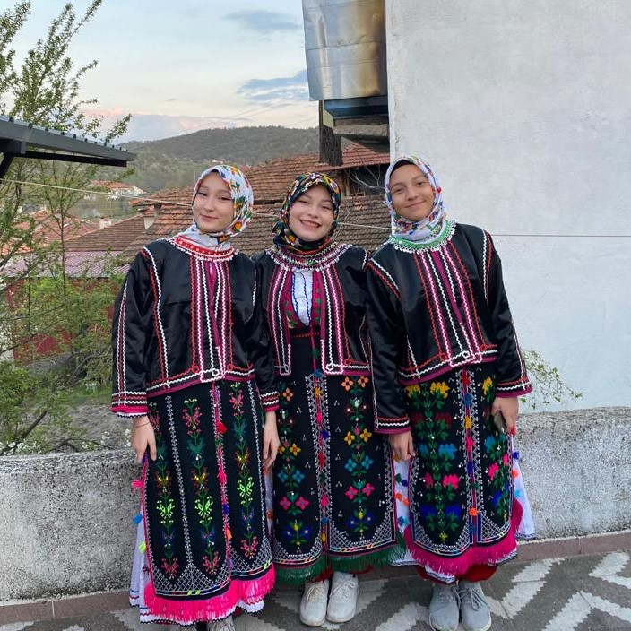
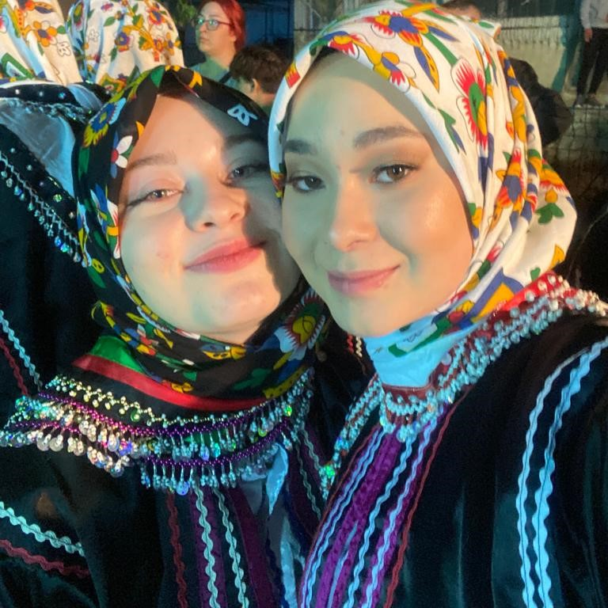
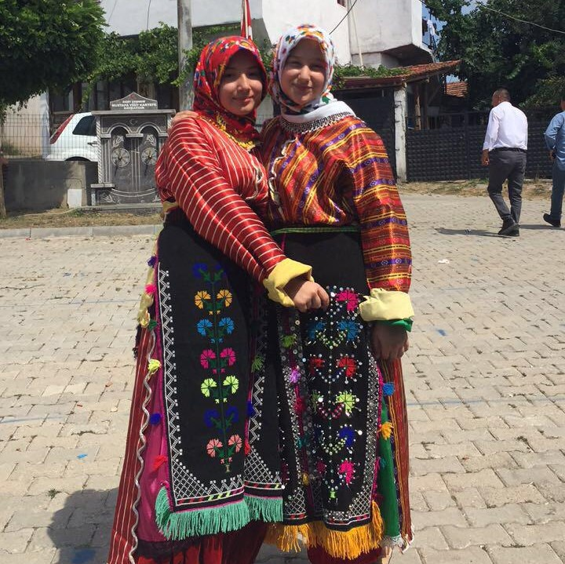
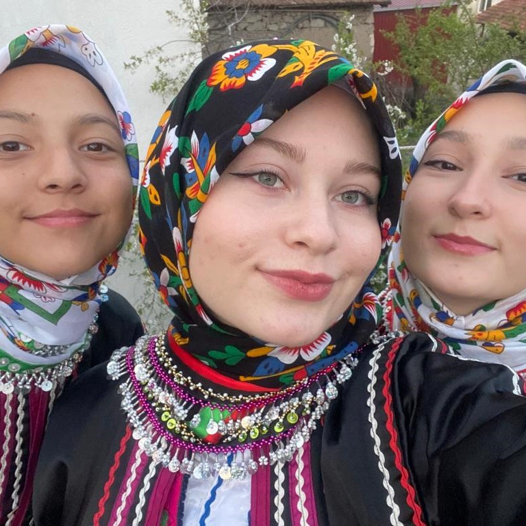
BALIKESİR YÖRESİ
Balıkesir’e ait yöresel kadın kıyafetleri
özelliklerine göre dört gruba ayrılarak incelenmektedir.
Bunlar; Manav Giyimi, Yörük Giyimi, Tahtacı Giyimi ve Çepni Giyimi’dir.
Manav Giyim
Balıkesir merkez ilçeleri,
Bigadiç’in ovalık kesimleri, Kepsut’un ovalık
kesimleri, Susurluk ve Savaştepe’nin bazı köylerinde
benzer bir kadın giyim tarzı görülmektedir. Söz konusu
kadın kıyafeti tepelik, simli pullu örtü veya yaşmak,
iç gömlek, dış gömlek, cepken,
koca don, peşkir, kemer, yün çorap ve ayakkabıdan oluşur.
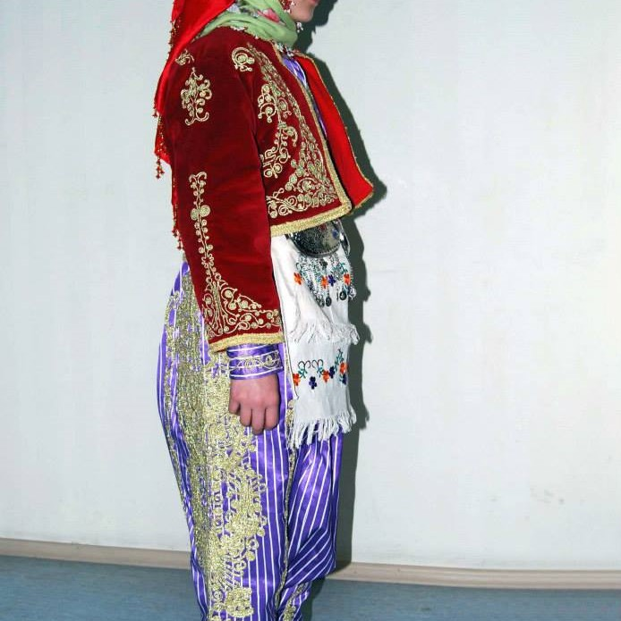
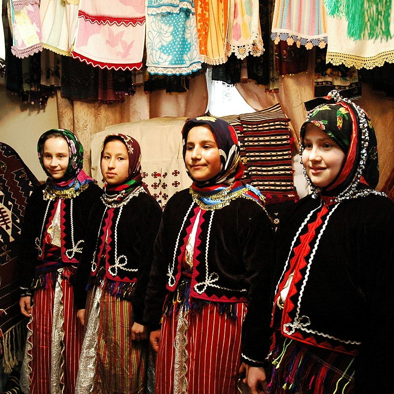
Yörük Giyim
Balıkesir’in daha
çok Doğu ilçelerinde yaşayan “Yörük”
kadınlarının kendilerine özgü giyimleri
vardır. Yörük kadın giyimi genel olarak albez,
alın bezi, don, göynek, göğüslük, üç etek, cepken,
arkalaç, önlük, golan-dongurdak, yün çorap
ve ayakkabıdan oluşur.
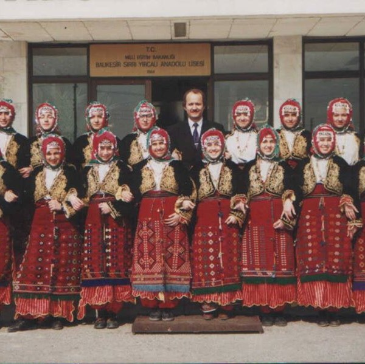
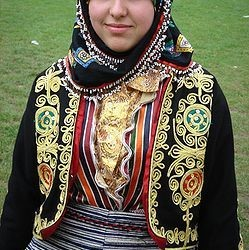
Tahtacı Giyim
Tahtacı Türkmenleri
Balıkesir coğrafyası içinde, Altıeylül
ilçesine bağlı Türkali köyü, Savaştepe’ye
bağlı Kongurca köyü, Kepsut’a bağlı Mehmetler
köyü, Burhaniye’ye bağlı Pelitköy ve Tahtacı
köyü ile Kazdağı’nda bulunan pek çok köyde ikamet
etmektedirler. Tahtacı kadınlarının yöresel kıyafetleri
kendine has hususiyetler taşımakta olup, özellikle
başgiyiminde Tahtacı köyleri arasında,
farklılıklar olduğu görülmektedir.
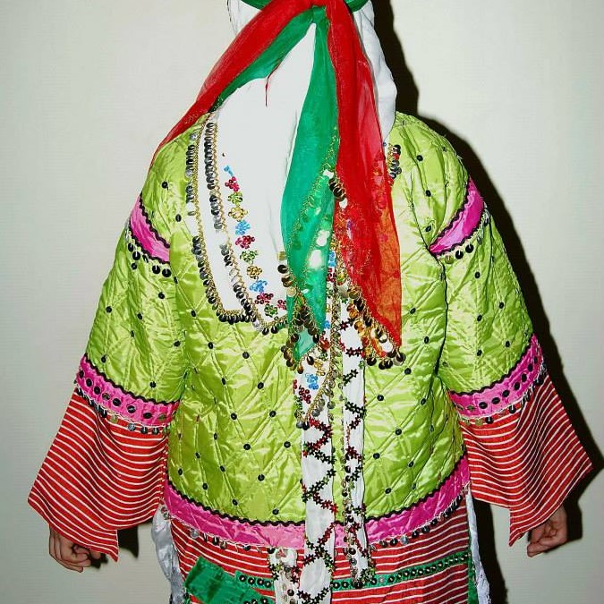
Çepni Giyim
Balıkesir Çepnileri’nin
giyimi Tahtacılar’dan ziyade Yörük kadın giyimine
benzerlik gösterir. Genel olarak Çepni giyimi alına
gelecek kısımlarında mangırların dizili olduğu tepelik,
kendine özgü desenleri olan albez, don, göynek,
göğüslük, üç etek, cepken, önlük,
golan, çorap ve ayakkabıdan oluşur.
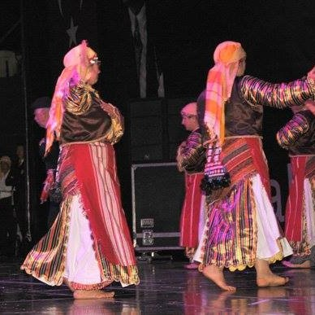
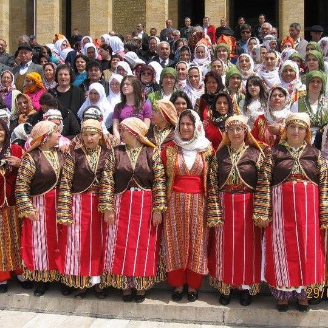
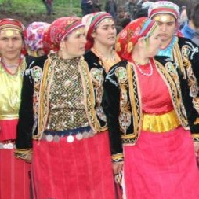

 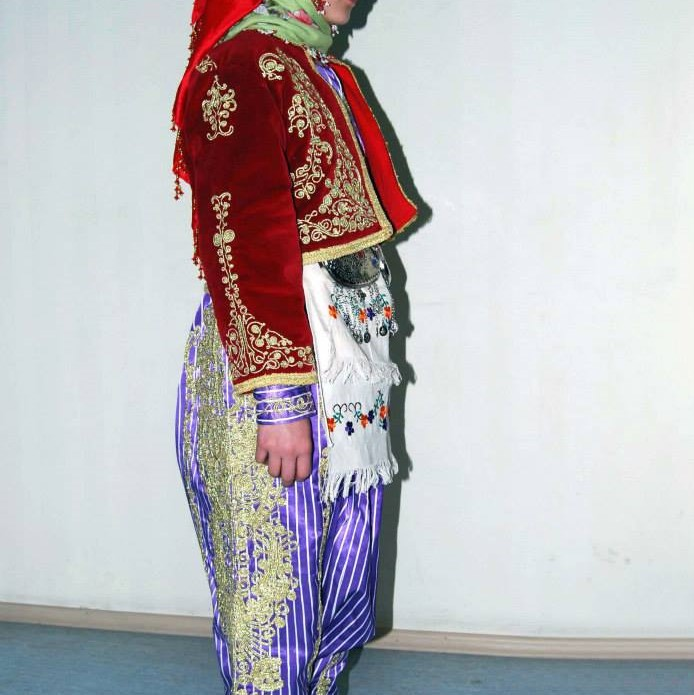
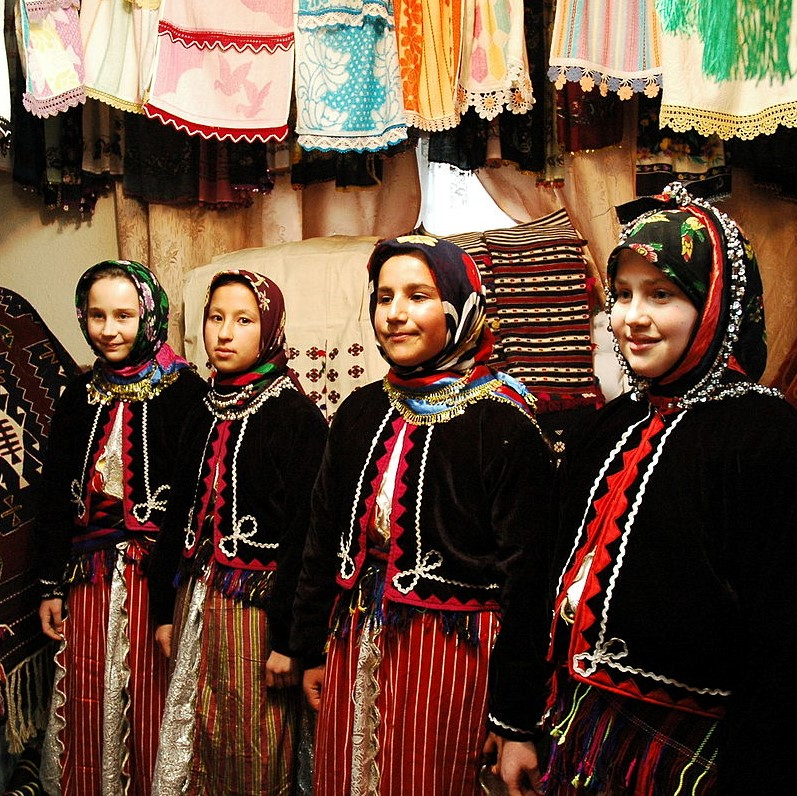
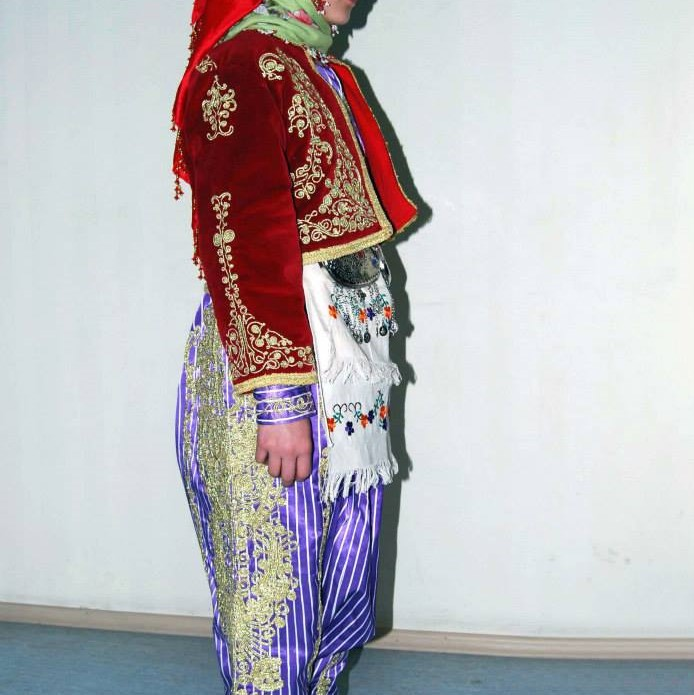
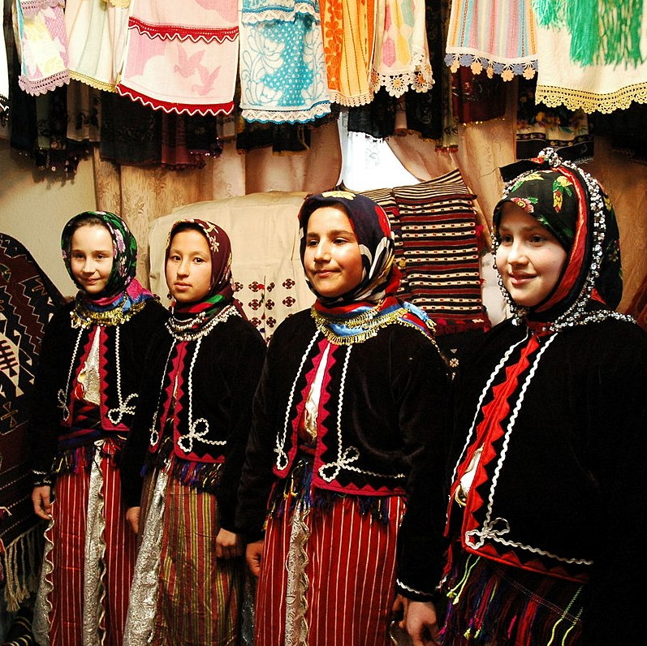
 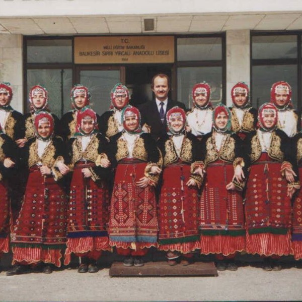
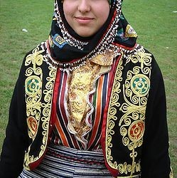
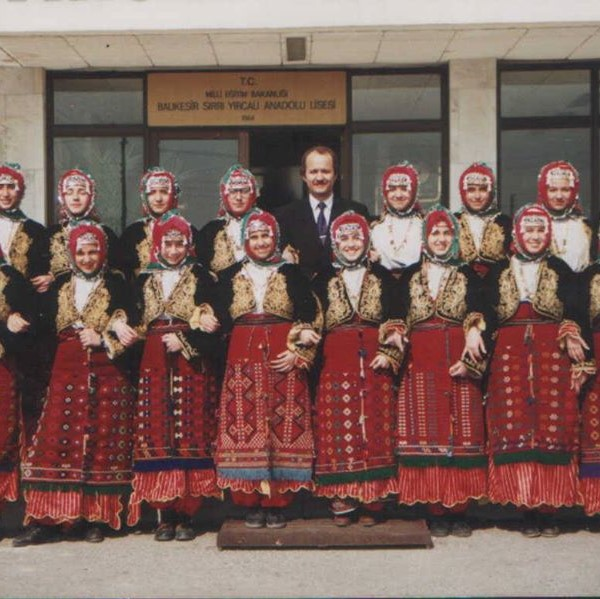
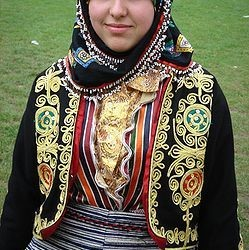

 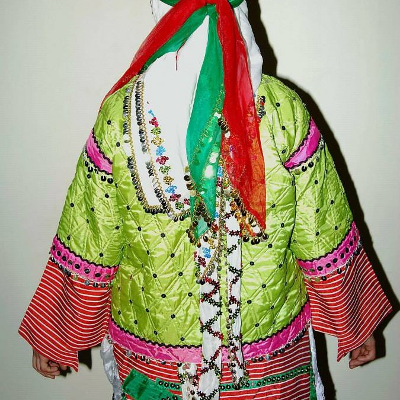
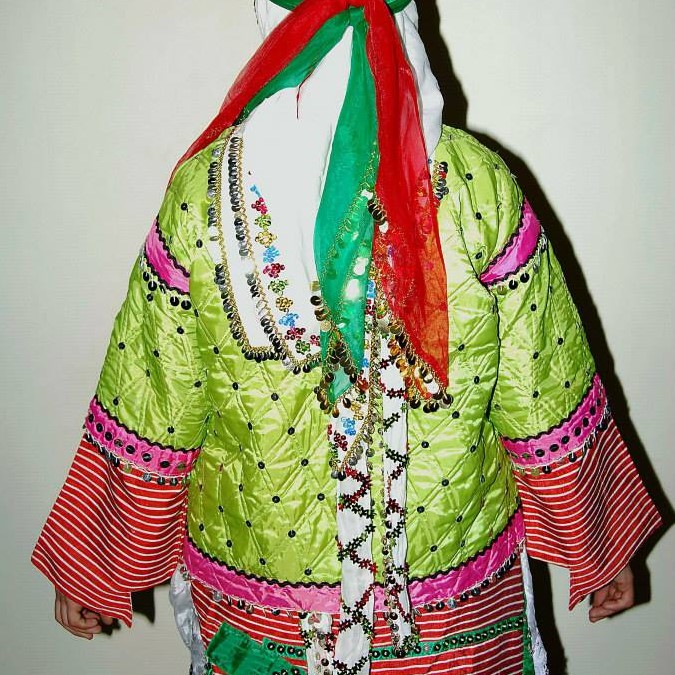